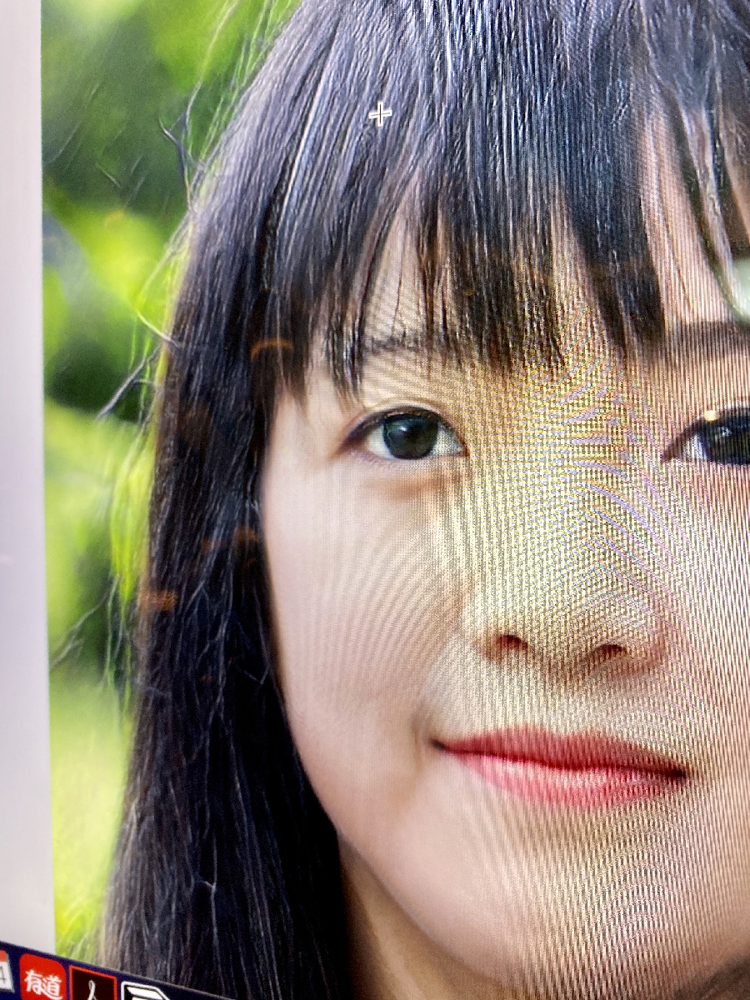

Absdiff = Absolute Difference
Absdiff(Absolute difference) is a series of natural pixelated, glitchy images and screenshots collected from
my phone and
laptop, interprets the pure aesthetics of errors of image encoding process.
Without
applying any effect or filter to those images, This practice demonstrates the potential of producing art
through a critical observation on computers while questioning
the artist's agency of creating art using supermatic technology.
The Cloud
Nov 8, 2019 at 19:14

The Body
Jan 7, 2019 at 14:32
The Hill
Nov 8, 2019 at 19:14
The Crown
Nov 8, 2019 at 19:14
Portrait #1
Nov 8, 2019 at 19:14
Portrait #2
Nov 8, 2019 at 19:14
Above glitch arts are from those images, can you recognize them?
The Body
The Cloud
The Hill
The Crown
Portrait #1
Portrait #2
Absdiff,
A ghost of computional process,
a happy mistakes of 0 & 1,
a primitive machine-machine
interaction.
I've been getting many glitchy images this year without knowing the theory of glitch art nor image encoding process, untill this Octobor. I've observed those image files all have something in common - They're subtly pixelated screenshots. After I discovered the pattern of randomly pixelated images, I developed a method to create pixelated screenshots through digital photography, and import them to Adobe Illustrator; the software will remap the screenshots and automatically generate an absolute different glitch art.
1. CAPTURE
Use mobile phone to capture the photo on the screen of laptop. Get close to capture the pixelated pattern, then scrensshot this photo again.
2. PIXELATE
Open the screenshot in Adobe Illustrator.The software will automatically generate a glitch image.
3. EXPORT
Export and save the glitch art.
ABOUT
Absdiff (Absulote Difference) is a independent project by Kiki Wu, a digital media artist whose practices include video art, sounds design, and creative programming. Inspired by the metaphysic relationship to her family memory, most of her works investigate the transformation of the cultural symbols across dimensions from physical space, virtual space to psychological matters. Her research interests include the national identity crisis, modern mythology, and internet culture.
Contact via e-mail: kikiwu404@gmail.com
EXHIBITION & PRESS
conX281

A group show at Hebert Sanders Gallery, SJSU, San Jose, US.Ranging across mediums from cast bronze, clay, and painting – to procedurally generated digital animation, pigments extracted from the California landscape, and Virtual Reality; the work in conX281 provides a glimpse into the practice of 10 (X) emerging artists beginning their career in the age of destabilized realities.